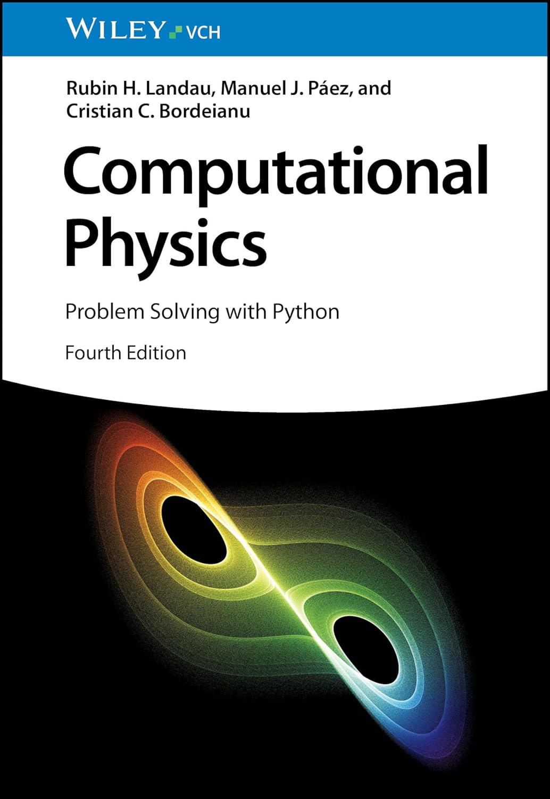

Computational Physics: Problem Solving with Python
Rubin H. Landau, Manuel J. Páez, and Crisitian C. Bordeianu
Fourth Edition

1. Introduction
1.1 Computational Physics and Science
1.2 This Book's Subjects
1.3 Video Lecture Supplements
1.4 This Book's Codes and Problems
1.5 Our Language: The Python Ecosystem
1.6 The Easy Way: Python Distributions
2. Software Basics
2.1 Making Computers Obey
2.2 Computer Number Representations
2.2.1 IEEE Floating-Point Numbers
2.2.1.1 Examples of IEEE Representations
2.2.2 Python and the IEEE 754 Standard
2.3 Python Mini Tutorial
2.3.1 Structure and Functions
2.3.2 Variable Types and Operators
2.3.3 Boolean and Control Structures
2.3.4 Python Lists as Arrays
2.3.5 Python I/O
2.3.6 Python's Algebraic Tools
2.4 Programming Warmup
2.4.1 Program Design
2.4.2 First Programming Steps
2.4.3 Over and Underflow Exercises
2.4.4 Machine Precision
2.4.5 Experiment: Your Machine's Precision
2.5 Python's Visualization Tools
2.5.1 Visual (VPython)'s 2D Plots
2.5.2 Matplotlib's 2D Plots
2.5.3 Matplotlib's 3D Surface Plots
2.5.4 Matplotlib's Animations
2.6 Plotting Exercises
2.7 Code Listings
3. Errors and Uncertainties
3.1 Types of Errors
3.1.1 Courting Disaster: Subtractive Cancelation
3.1.1.1 Subtractive Cancelation Exercises
3.1.2 Round-Off Errors
3.1.3 Round-Off Error Accumulation
3.2 Experimental Error Investigation
3.3 Errors with Power Series
3.3.1 Implementation and Assessment
3.3.2 Error in Specular Reflection
3.4 Errors in Bessel Functions
3.4.1 Numerical Recursion (Method)
3.4.2 Implementation and Assessment: Recursion Relations
3.5 Code Listing
4. Monte Carlo Simulations
4.1 Random Numbers
4.1.1 Random Number Generation
4.1.2 Computing a Random Sequence
4.2 Simulating a Random Walk
4.2.1 Random Walk Implementation
4.2.2 Random Walks in a Brain
4.2.3 Random Protein Folding
4.3 Spontaneous Decay
4.3.1 Discrete Decay Model
4.3.2 The Exponential Decay Approximation
4.3.3 Discrete Decay Simulation
4.3.4 Decay Implementation and Visualization
4.4 Testing and Generating Random Distributions
4.5 Code Listings
5. Differentiation and Integration
5.1 Differentiation Algorithms
5.1.1 Forward Difference
5.1.2 Central Difference
5.2 Extrapolated Difference
5.2.1 Second Derivatives
5.2.1.1 Assessment
5.3 Integration Algorithms
5.3.1 Box Counting
5.3.2 Trapezoid Rule
5.3.3 Simpson's Rule
5.3.4 Simple Integration Error Estimates
5.3.5 Higher-Order Algorithms
5.4 Gaussian Quadrature
5.4.1 Mapping Gaussian Points
5.4.2 Gaussian Quadrature Derivation
5.5 Monte Carlo Integrations
5.5.1 Stone Throwing Implementation
5.5.2 Integration Error Investigation
5.6 Mean Value and N-D Integration
5.6.1 10-D MC Error Investigation
5.6.2 Implementation: 10-D Monte Carlo Integration
5.7 MC Variance Reduction
5.8 Importance Sampling and von Neumann Rejection
5.9 Code Listings
6. Trial-and-Error Searching and Data Fitting
6.1 Quantum Bound States I
6.2 Bisection Search
6.2.1 Bisection Exercises
6.3 Newton-Raphson Search
6.3.1 Search + Backtracking
6.4 Magnetization Search
6.5 Data Fitting
6.5.1 Lagrange Fitting
6.5.2 Cubic Spline Interpolation
6.5.3 Cubic Spline Quadrature
6.6 Fitting Exponential Decay
6.7 Least-Squares Fitting
6.7.1 Least-Squares Implementation
6.7.2 Linear Quadratic Fit
6.7.2.1 Linear Quadratic Fit Assessment
6.8 Nonlinear Fit to a Resonance
6.9 Code Listings
7. Matrix Computing and N-D Searching
7.1 Masses on a String and N-D Searching
7.2 Matrix Generalities
7.3 Matrices in Python
7.3.1 Lists as Arrays
7.3.2 NumPy Matrices
7.3.3 NumPy Linear Algebra Library
7.4 Exercise: Tests Before Use
7.5 Solution to String Problem
7.6 Spin States and Hyperfine Structure
7.7 Speeding Up Matrix Computing
7.7.1 Vectorization
7.7.2 Speedup Exercises
7.8 Code Listing
8. Differential Equations and Nonlinear Oscillations
8.1 Nonlinear Oscillators
8.2 ODE Review
8.2.1 Order
8.2.2 Ordinary and Partial
8.2.3 Linear and Nonlinear
8.2.4 Initial and Boundary Conditions
8.3 Dynamic Form of ODEs
8.4 ODE Algorithms
8.4.1 Euler's Rule
8.4.2 Runge-Kutta Rule
8.4.3 Adams-Bashful-Moulton Predictor-Corrector Rule
8.4.4 Assessment: rk2 versus rk4 versus rk45
8.5 Solution for Nonlinear Oscillations
8.5.1 Precision Assessment via E Conservation
8.6 Extensions: Nonlinear Resonances, Beats, Friction
8.6.1 Friction
8.6.2 Resonances and Beats
8.6.3 Time-Dependent Forces
8.7 Code Listings
9. Fourier Analyses
9.1 Fourier Series
9.1.1 Sawtooth and Half-Wave Functions
9.1.2 Exercises: Fourier Series Summations
9.2 Fourier Transforms
9.3 Discrete Fourier Transforms
9.3.1 Aliasing
9.3.2 Assessments
9.3.3 Transforming Nonperiodic Functions
9.4 Noise Filtering
9.4.1 Noise Reduction via Autocorrelation
9.4.2 Autocorrelation Function Exercises
9.4.3 Filtering with Transforms
9.4.4 Digital Filters: Windowed Sinc Filters
9.5 Fast Fourier Transform
9.5.1 Bit Reversal
9.6 FFT Implementation
9.7 FFT Assessment
9.8 Code Listings
10. Wavelet and Principal Components Analysis
10.1 Part I: Wavelet Analysis
10.2 Wave Packets and Uncertainty Principle
10.2.1 Wave Packet Exercise
10.3 Short-Time Fourier Transforms
10.4 Wavelet Transforms
10.4.1 Generating Wavelet Basis Functions
10.4.2 Continuous Wavelet Transforms
10.5 Discrete Wavelet Transforms
10.5.1 Pyramid Scheme
10.5.2 Daubechies Wavelets Filters
10.5.3 DWT Exercise
10.6 Part II: Principal Components Analysis
10.6.1 Multi-dimensional Data Space
10.6.2 Wonders of the Covariance Matrix
10.6.3 Demonstration of Principal Component Analysis
10.6.4 PCA Exercises
10.7 Code Listings
11. Neural Networks and Machine Learning
11.1 Part I: Biological and Artificial Neural Networks
11.1.1 Artificial Neural Networks
11.2 A Simple Neural Network
11.2.1 Coding A Neuron
11.2.2 Building A Simple Network
11.2.3 Training A Simple Network
11.2.4 Decreasing the Error
11.2.5 Coding and Running A Simple Network
11.3 A Graphical Deep Net
11.4 Part II: Machine Learning Software
11.4.1 TensorFlow Installation and Execution
11.5 TensorFlow and SkLearn Examples
11.5.1 Preprocessing with Scikit-learn
11.5.1.1 Gradient Tape
11.5.2 Linear Fit to Hubble's Data
11.6 ML Clustering
11.6.1 Reading Files with Panda
11.6.2 Clustering with Perceptrons
11.6.3 Clustering with Stochastic Gradient Descent
11.7 Keras: Python's Deep Learning API
11.8 Image Processing with OpenCV
11.8.1 Background Subtraction
11.9 Explore ML Data Repositories
11.10 Code Listings
12. Quantum Computing (G. He, Coauthor)
12.1 Dirac Notation in Quantum Mechanics
12.2 From Bits to Qubits
12.2.1 Multiple Qubit States
12.3 Entangled and Separable States
12.3.1 Physics Exercise: Two Entangled Dipoles
12.4 Logic Gates
12.4.1 1-Qubit Gates
12.4.2 2-Qubit Gates
12.4.3 Entanglement via Gates
12.4.4 3-Qubit Gates
12.5 An Intro to QC Programming
12.5.1 Half and Full Adders
12.6 Accessing the IBM Quantum Computer
12.6.1 IBM Quantum Composer
12.7 Qiskit Plus IBM Quantum
12.7.1 A Full Adder
12.7.2 IBM Quantum Exercises
12.8 The Quantum Fourier Transform
12.8.1 1-Qubit QFT
12.8.2 2-Qubit QFT
12.8.3 n-Qubit QFT
12.9 Oracle + Diffuser = Grover's Search Algorithm
12.9.1 Grover's Implementation
12.10 Shor's Factoring
12.11 Code Listings
13. ODE Applications; Eigenvalues, Scattering, Trajectories
13.1 Quantum Eigenvalues for Arbitrary Potentials
13.1.1 Model: Nucleon in a Box
13.2 Algorithm: ODE Solver + Search
13.2.1 Not Recommended: Matchless Searching
13.2.2 Numerov Algorithm for Schrodinger ODE
13.2.3 Implementation: Eigenvalues via ODE Solver + Bisection Algorithm
13.2.4 Explorations
13.3 Classical Chaotic Scattering
13.3.1 Model and Theory
13.3.2 Implementation
13.3.3 Assessment
13.4 Projectile Motion with Drag
13.4.1 Assessment
13.5 2- and 3-Body Planetary Orbits
13.5.1 Planets via Two of Newton's Laws
13.5.2 The Discovery of Neptune
13.6 Code Listings
14. Fractals and Statistical Growth Models
14.1 The Sierpinski Gasket
14.1.1 Measuring Fractal Dimension
14.2 Growing Plants
14.2.1 Self-Affine Connection
14.2.2 Barnsley's Fern
14.2.3 Self-Affine Trees
14.3 Ballistic Deposition
14.4 Length of British Coastline
14.4.1 Box Counting Algorithm
14.4.2 Coastline Exercise
14.5 Correlated Growth
14.6 Diffusion-Limited Aggregation
14.6.1 Fractal of DLA or Pollock
14.7 Fractals in Bifurcations
14.8 Cellular Automata Fractals
14.9 Perlin Noise Adds Realism
14.9.1 Ray Tracing Algorithms
14.10 Code Listings
15. Nonlinear Population Dynamics
15.1 The Logistic Map, A Bug Population Model
15.1.1 Exploring Map Properties
15.1.1.1 Stable Populations
15.1.2 Fixed Points
15.1.3 Period Doubling, Bifurcations
15.1.4 Mapping Implementation
15.2 Chaos
15.3 Bifurcation Diagrams
15.3.1 Bifurcation Diagram Implementation
15.3.2 Feigenbaum Constants
15.3.3 Other Maps
15.4 Measures of Chaos
15.4.1 Lyapunov Coefficients
15.4.2 Shannon Entropy
15.5 Coupled Predator-Prey Models
15.5.1 Lotka-Volterra Model
15.5.2 Predator-Prey Chaos
15.5.3 LVM with Prey Limit
15.5.4 LVM with Predation Efficiency
15.5.5 LVM Implementation and Assessment
15.5.6 Two Predators, One Prey
15.6 Code Listings
16. Nonlinear Dynamics of Continuous Systems
16.1 The Chaotic Pendulum
16.1.1 Free Pendulum Oscillations
16.1.2 Analytic Solution as Elliptic Integrals
16.1.3 Free Pendulum Implementation and Test
16.2 Phase Space
16.3 Chaotic Explorations
16.3.1 Phase Space Without Velocities
16.3.2 Chaotic Bifurcations
16.3.3 Fourier or Wavelet Analysis
16.4 Other Chaotic Systems
16.4.1 The Double Pendulum
16.4.2 Billiards
16.4.3 Multiple Scattering Centers
16.4.3.1 Hard Disk Scattering
16.4.4 Lorenz Attractors
16.4.5 van der Pool Oscillator
16.4.6 The Duffing Oscillator
16.5 Code Listings
17. Thermodynamics Simulations and Feynman Path Integrals
17.1 An Ising Magnetic Chain
17.1.1 Statistical Mechanics
17.1.1.1 Analytic Solution
17.2 Metropolis Algorithm
17.2.1 Metropolis Exercise
17.2.2 Equilibration and Thermodynamic Properties
17.2.3 Explorations
17.3 Fast Equilibration via Wang-Landau Sampling
17.3.1 WLS Implementation
17.4 Path Integral Quantum Mechanics
17.4.1 Bound-State Wave Function
17.5 Lattice Path Integration
17.5.1 A Time-Saving Trick
17.6 Implementation
17.6.1 Path Integration Exercise
17.6.2 Quantum Bouncer
17.6.3 Path Integral Bouncer Exercises
17.7 Code Listings
18. Molecular Dynamics Simulations
18.1 MD Versus Thermodynamics
18.2 Initial, Boundary, and Large $r$ Conditions
18.3 Verlet Algorithms
18.3.1 Implementation and Exercise
18.3.2 Analysis
18.4 MD for 16 Particles
18.5 Code Listing
19. General Relativity
19.1 Einstein's Field Equations
19.1.1 Calculating the Riemann and Ricci Tensors
19.1.2 Riemann and Ricci Tensor Problems
19.1.3 Event Horizons
19.2 Gravitational Deflection of Light
19.2.1 Gravitational Lensing
19.3 Planetary Orbits in GR Gravity
19.3.1 Newton's Potential Corrected
19.3.2 Orbit Computation via Energy Conservation
19.3.3 Precession of the Perihelion of Mercury
19.4 Visualizing Wormholes
19.5 Problems
19.6 Code Listings
20. Integral Equations
20.1 Nonlocal Potential Binding
20.2 Momentum-Space Schrödinger Equation
20.2.1 Integral to Matrix Equations
20.2.2 Delta
20.2.3 Wave Function (Exploration)
20.3 Scattering in Momentum Space
20.3.1 Schrödinger to Lippmann-Schwinger Equation
20.3.2 Singular Integral Evaluations
20.3.3 Singular Integral Equations to Matrix Equations
20.3.4 Solution
20.3.5 Exercises
20.3.6 Scattering Wave Function (Exploration)
20.4 Code Listings
21. PDE Review, Electrostatics and Relaxation
21.1 Review
21.2 Laplace's Equation
21.2.1 Fourier Series Solution
21.2.2 Fourier Series as an Algorithm
21.3 Finite-Difference Algorithm
21.3.1 Relaxation and Overrelaxation
21.4 Alternate Capacitor Problems
21.4.1 Implementation
21.5 Electric Field Visualization
21.6 Code Listings
22. Heat Flow and Leapfrogging
22.1 The Parabolic Heat Equation
22.1.1 Solution as Analytic Expansion
22.2 Time Stepping (Leapfrog) Algorithm
22.2.1 Von Neumann Stability Condition
22.2.2 Implementation
22.2.3 Assessment and Visualization
22.3 Newton's Radiative Cooling
22.4 The Crank-Nicolson Algorithm
22.4.1 Solution via Tridiagonal Matrix
22.4.2 Crank-Nicolson Implementation
22.5 Code Listings
23. String and Membrane Waves
23.1 A Vibrating String's Hyperbolic Wave Equation
23.1.1 Solution as Normal-Mode Expansion
23.2 Time-Stepping Algorithm
23.3 von Neumann Stability Analysis
23.3.1 Implementation and Assessment
23.4 Beyond The Simple Wave Equation
23.4.1 Including Friction
23.4.2 Including Variable Tension and Density
23.4.3 Waves on Catenary
23.4.4 Catenary Assessment
23.4.5 Including Nonlinear Terms
23.5 Vibrating Membrane (2D Waves)
23.6 Analytical Solution
23.7 Numerical Solution
23.8 Code Listings
24. Quantum Wave Packets and EM Waves
24.1 Time-Dependent Schrödinger Equation
24.2 Split-Time Algorithm
24.2.1 Implementation
24.2.1.1 Animation
24.2.2 Wave Packets in Other Wells
24.3 Special Schrödinger Algorithm
24.4 Quantum Chaos
24.4.1 Quantum Billiards
24.4.2 Three Disks Scattering
24.5 E&M Waves: Finite Difference Time Domain
24.6 Maxwell's Equations
24.7 Split-Time FDTD
24.7.1 Implementation and Assessment
24.8 More E&M Problems
24.8.1 Circularly Polarized Waves
24.8.2 Wave Plates
24.8.3 Algorithm and Exercise
24.8.4 Twin Lead Transmission Line
24.9 Code Listings
25. Shock and Soliton Waves
25.1 The Continuity and Advection Equations
25.2 Shock Waves via Burgers' Equation
25.2.1 Lax-Wendroff Algorithm
25.2.2 Implementation and Assessment
25.3 Including Dispersion
25.4 KdeV Solitons
25.4.1 Analytic Solution
25.4.2 Algorithm
25.4.3 Implementation
25.4.4 Exploration: Phase Space Solitons and Soliton Crossings
25.5 Pendulum Chain Solitons
25.5.1 Including Dispersion
25.6 Continuum Limit, the Sine-Gordon Equation
25.6.1 Analytic Solution
25.6.2 Numeric 2D Solitons (Pulsons)
25.6.3 Implementation
25.7 Code Listings
26. Fluid Hydrodynamics
26.1 Navier-Stokes Equation
26.2 Flow Through Parallel Plates
26.3 Navier-Stokes Difference Equation
26.3.1 Successive Overrelaxation Algorithm
26.4 Vorticity Form of Navier-Stokes Equation
26.4.1 Vorticity Difference Equation
26.4.2 Beam Boundary Conditions
26.5 Assessment and Exploration
26.5.1 Explorations
26.6 Code Listings
27. Finite Element Electrostatics
27.1 The Potential of Two Metal Plates
27.1.1 Analytic Solution
27.2 Finite Element Method
27.2.1 Weak Form of PDE
27.2.2 Galerkin Spectral Decomposition
27.2.3 Solution via Linear Equations
27.2.4 Imposing the Boundary Conditions
27.3 1D FEM Problems
27.4 2D FEM Exercises
27.5 Code Listings
Back to Home